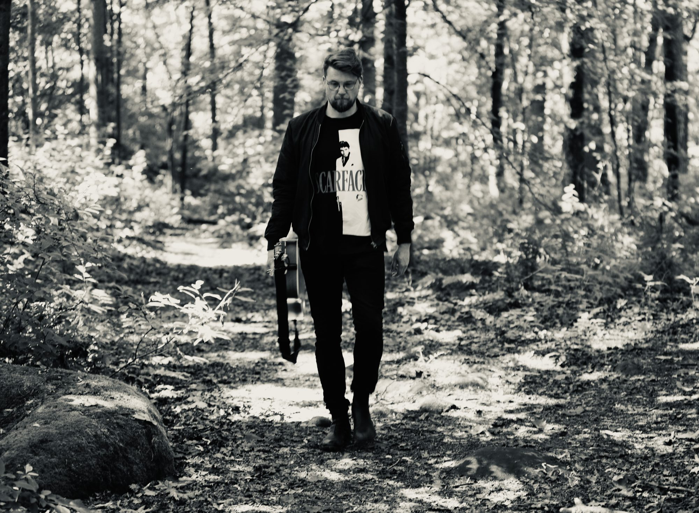

Niin kauan kuin muistan, mun on ollut vaikea uskoa unelmiini.
Olin kiltti lapsi.
Ilmaisin harvoin halujani, koska aistin että vanhemmillani oli raskasta enkä halunnut vaivata heitä.
Paitsi yhden kerran, kun olin 4-vuotias.
Olin äidin kanssa kauppareissulla Elannon tavaratalossa Hakaniemessä.
Äiti lähti tekemään ostoksia ja mä jäin leluosastolle.
Siellä oli punainen polkuauto.
Sitä ei saanut kokeilla.
Kokeilin sitä.
Rakastuin siihen.
Halusin sen.
Tai ei, se on vähättelevästi sanottu.
Kukaan ei ole koskaan halunnut mitään niin paljon kuin mä halusin tuota polkuautoa.
Kun äiti tuli, ilmoitin että otamme tuon.
Äiti selitti että meillä ei ole rahaa siihen ja että sun ja veljiesi vanha polkuauto toimii vielä.
Menetin malttini täysin. Itkin, potkin, raivosin.
Äiti yllättyi. En ollut koskaan tehnyt niin.
Hän ei saanut mua rauhoittumaan, joten nosti mut kainaloonsa.
Huusin ja rimpuilin kun äiti raahasi mut ja kauppakassit läpi tavaratalon otsa hiessä.
Vasta kun olimme torilla, raivo kääntyi pettyneeksi nyyhkytykseksi.
En koskaan enää järjestänyt vastaavaa kohtausta.
Myöhempinä vuosina äiti kysyi tapauksesta, mutta en halunnut muistella sitä.
Luulen että tapaus mursi jonkin kohdan mussa. Opettelin tyytymään vähempään, ja tein sitä niin pitkään että siitä tuli luonteenpiirre.
Vaikka rakastin musiikin tekemistä ja haaveilin artistiudesta teinistä lähtien, en pitänyt sitä itselleni mahdollisena. Sellainen kuului muille.
Lahjakkaammille.
Vähitellen toteutumaton unelma kaiversi elämää ontoksi. Kasvava tunne siitä että tässä ei ole kaikki.
Mutta en ollut vielä valmis.
Sitten iskivät menetysten vuodet: isän kuolema, avioero, äidin kuolema.
Kokemus elämän rajallisuudesta havahdutti mut.
Kyse ei olekaan ollut siitä, riittääkö lahjakkuus, vaan siitä, uskallanko haluta.
Se nelivuotias Jarkko tiesi mitä haluaa.
On keski-ikäisen Jarkon vuoro uskaltaa samoin.
